BLEECO Brighton lamp posts
Click here to go to the Beno lamp post guide homepage
1920s - 1930s
BLEECO (The Brighton Lighting and Electrical Engineering Co.) was a lamp post company in Brighton. Most of their lamp posts were installed in the south east and south coast of England. It is now rare to find a BLEECO lamp post.
BLEECO (with BLEECO lamp) at Newhaven Fort.
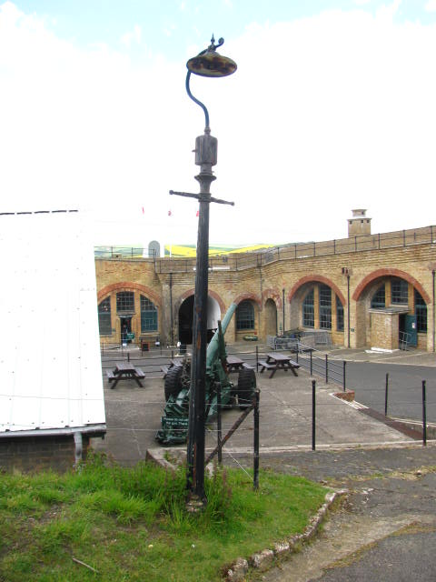
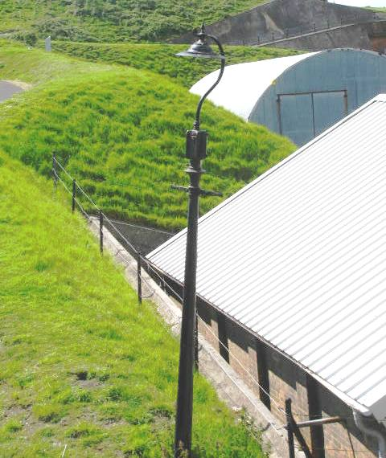
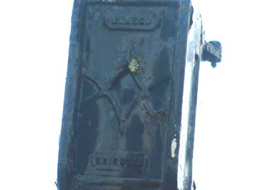
BLEECO with ESLA lamp at Concrete Utilities lamp post museum.
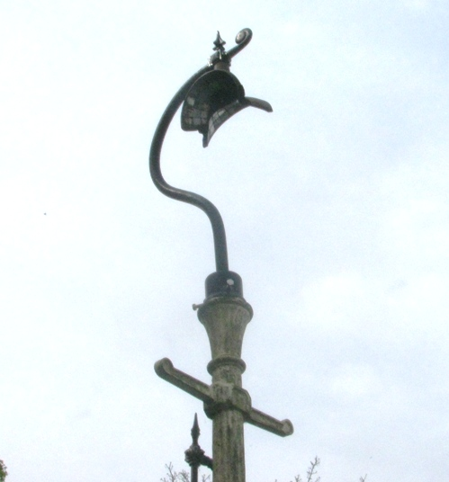
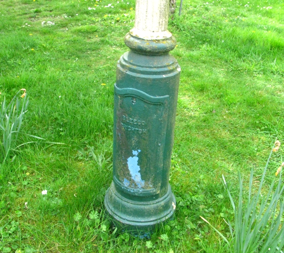
BLEECO on the side of an old building in Ashford (near the station).
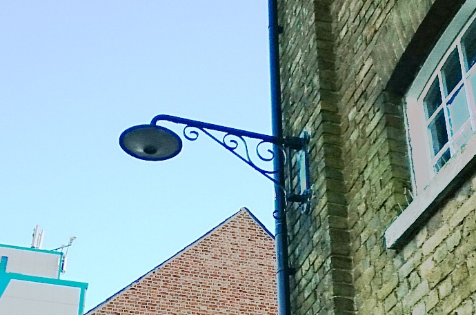
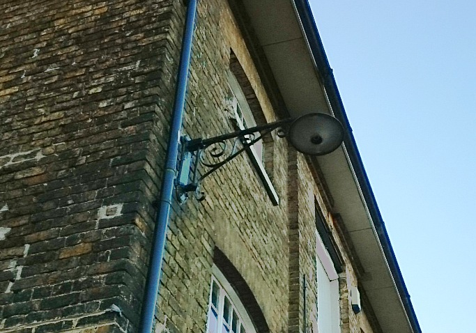
F Parkin, Bonhay Foundry lamp post in Exeter with "Pudsey Andover" bracket. (lamp has recently been replaced).
Notice that the control box is a BLEECO but is branded as Pudsey Andover.
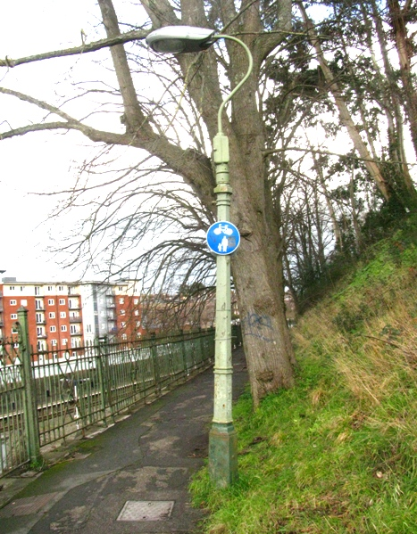
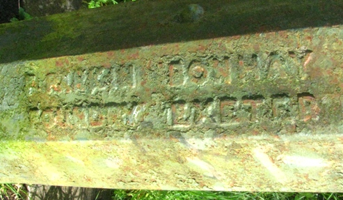
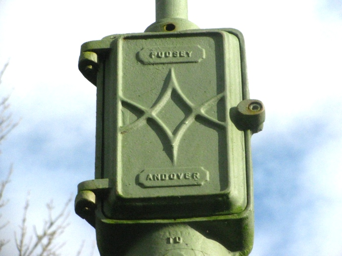
1950s
BLEECO telegraph pole lamps in Farningham road (Kent).
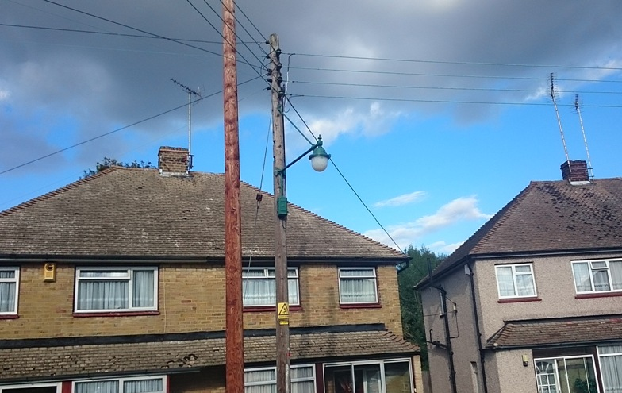
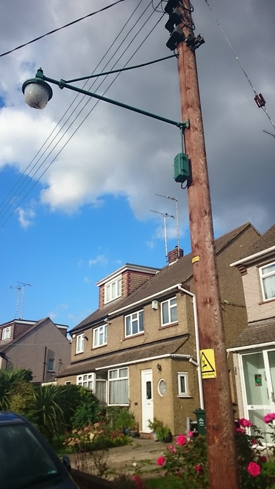
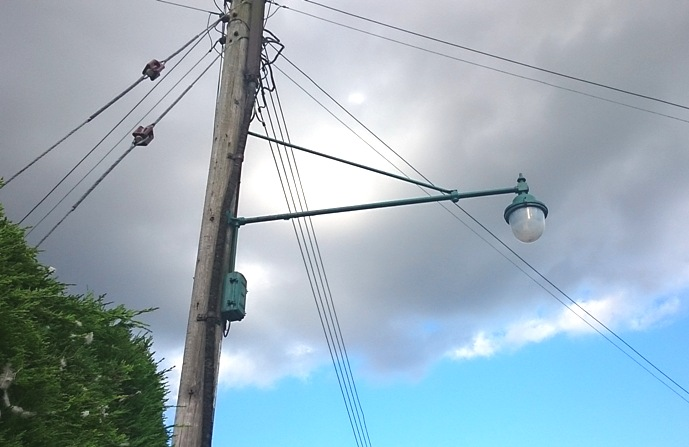
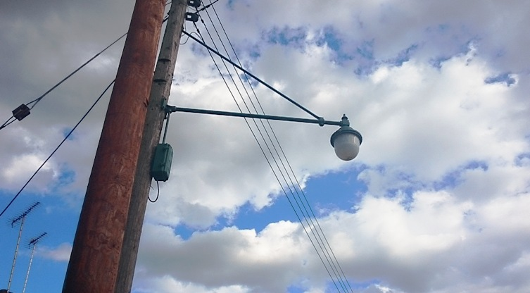
BLEECO telegraph pole lamps near Longfield (Kent).
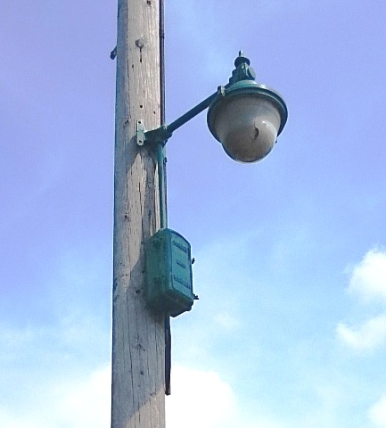
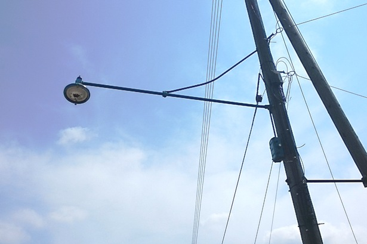
BLEECO telegraph pole lamps in longfield (Kent) modernized in the 80s.
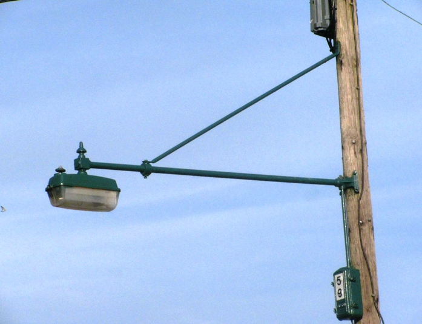
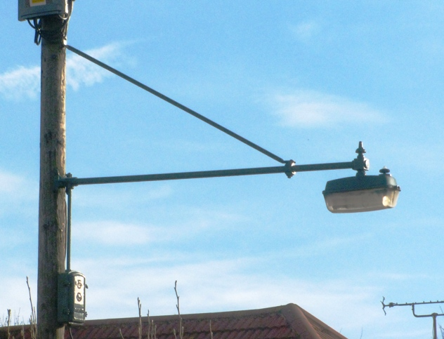
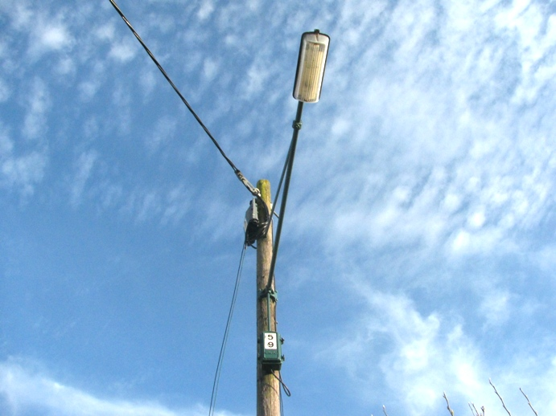
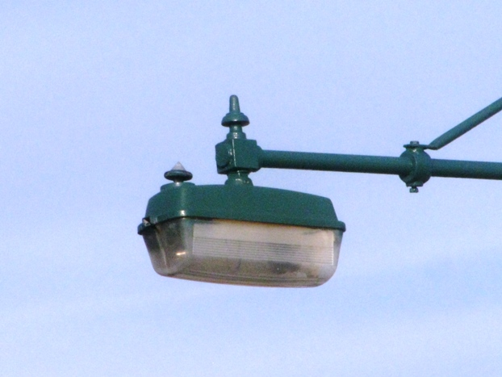
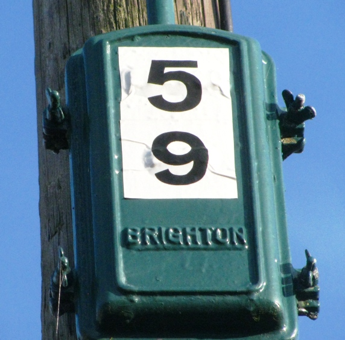
BLEECO telegraph pole lamp in longfield (Kent) modernized in the 90s.
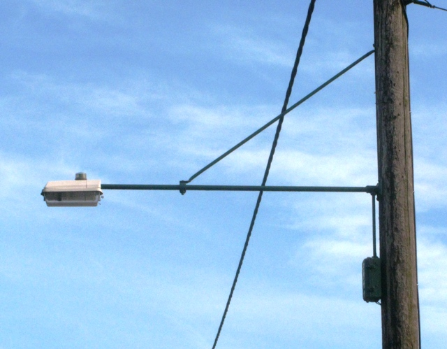
BLEECO telegraph pole lamp in longfield (Kent) modernized in the 2010s.
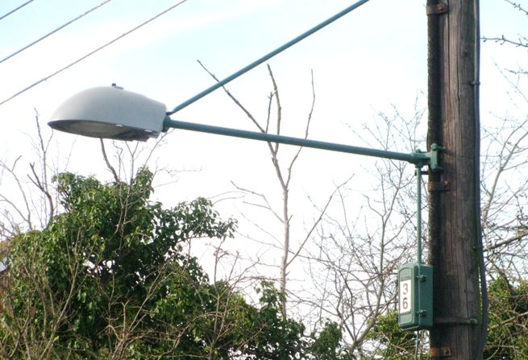
Click here to go to the Beno lamp post guide homepage